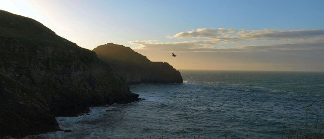

- 


Spirit Chaser: The Quest for Bega.
This is the true story of a spiritual quest that turned into an uplifting sacred pilgrimage. In June 1989, the author began following a series of psychic messages and significant synchronicity that led him to discover the enigmatic mystery of St Bega, the sacredness of the British landscape and ultimately to experience the divine reality of the Celtic tradition of mysticism, miracles and magic. Spirit Chaser takes us on a magnificent journey, a journey into the twilight past of seventh century Britain and Ireland. A journey into the heart of a modern day quest for the mystery that is the Sancta Bega; the sacred ring at the mystical centre of the British Isles.£14.99
Buy Now
Also Available in hardback collector's edition and Audiobook
236 pages.
15.24cm x 22.86cm perfect bound paperback.
Spirit of Albion Books, Cornwall, UK.
ISBN 978-0-9563554-2-3


Bega and the Sacred Ring.
This title has been out of print now for 19 years, so it is with great pleasurethat we can now offer a new, revised second edition. The text remains largely unchanged but this edition has many new photographs, plus a brand new introduction by the author. Buy this psychic questing classic now.
£7.99
Buy Now
Spirit of Albion Books.
Cornwall, UK.
ISBN 978-0-9563554-1-6
Lucifer Bridge.
Lucifer Bridge is the debut poetry collection by Alex Langstone. Featuring modern poetry of a surreal mystical, esoteric and romantic nature, partly inspired by the diverse beauty of the British landscape and also by the dark gothic visionary esoteric-poetic adventures of the author. Alex Langstone has previously seen his work in print through various publications including The Heritage Journal, Meyn Mamvro and The Mirror of Isis and in anthologies published by Forward Press. This debut collection, hand picked by the author promises to inspire, excite, delight and stimulate!£7.99
Buy Now
Spirit of Albion Books, Cornwall, UK.
ISBN 978-0-9563554-0-9
'Ascending Orb of Bloody Night'.
My spooky poem 'Ascending Orb of Bloody Night' is featured in the Folk Horror Revival: Corpse Roads anthology.£15.00 (excl. VAT)
Buy Now
Wyrd Harvest Press.
ISBN 9781326553265
My article 'The Many Faces of Helena' has recently been published
in a brand new anthology about Elen, the elusive Spirit of Nature.
Finding Elen: The Quest for Elen of the Ways.
Caroline Wise has been exploring the mysteries of Elen of the Ways and the Green Lady for many years. This latest book 'Finding Elen' gives Caroline the opportunity to share her deep understanding of the myths of the land. Caroline has the amazing gift of being able to convey her personal vision to both pilgrim and artists, bringing Elen, the goddess, into the forefront of our minds. Contributors include Andrew Collins, Caitlín Matthews, Linda Iles, Alex Langstone, Laria Teresa-Harmer, John Merron and several artists all of whom have revealed Elen of the Ways to the world. So who was Elen - Helena; the goddess of many names? In 'Finding Elen' we have several archetypal contenders. But whoever she was, Elen is seen as guardian protectress of Britain.£10.99
Buy Now
My poem "Buckator" has been featured in a recent anthology of poetry and prose.
Hoofprints in the Wildwood is a devotional anthology for the Horned God in all of his manifestations. It consists of devotional essays, poetry, artwork, and rituals from his devotees all across the world. Individuals from multiple pagan paths have contributed to this work each lending their own individual view of the Horned God as they worship him. Multiple manifestations of this deity are presented including Cernunnos, Gwynn Ap Nudd, Bucca, The Green Man, the Witchfather, and many more. Within you will find heartfelt offerings to this most enigmatic of Gods, portraying him as a living force in the world that deeply touches the lives of those who are called to his worship. The aim of this work is to bring forth the voices of those who love him in worship and praise.£8.37 (excl. VAT)
Buy Now
Richard Derks
Gullinbursti Press
I also write a regular 'Cornish Folklore' column for the long running and highly respected journal Meyn Mamvro.
The magazine explores the ancient stones, sacred sites, archaeology and folklore of Cornwall.Meyn Mamvro subscription order form can be found here.
Buy Now